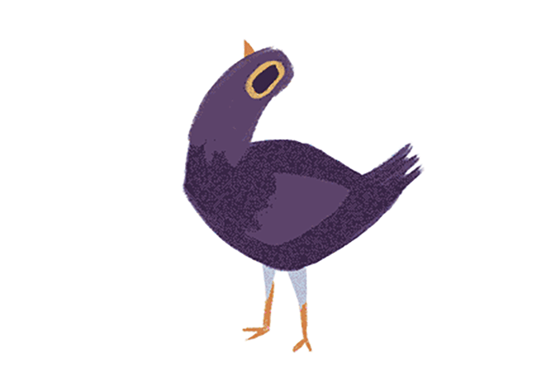
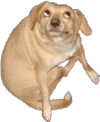
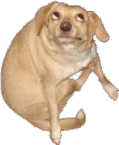
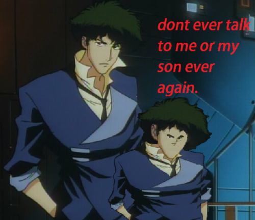
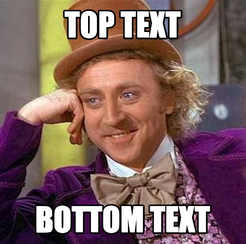
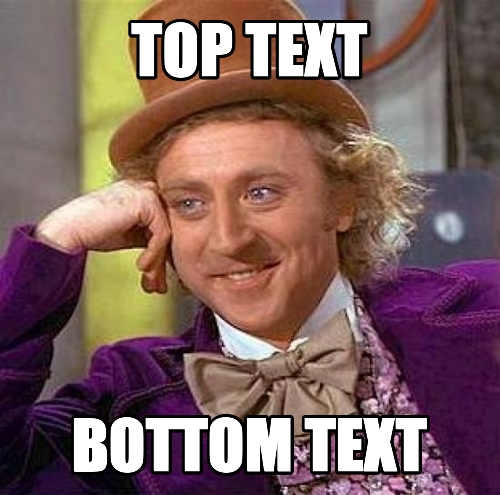
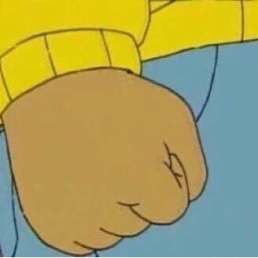

describes the features of a generative network. A generative network encourages and enables creative production and, as a system, possesses leverage, adaptability, ease of mastery, accessibility, and transferability.
describes the features of a generative network. A generative network encourages and enables creative production and, as a system, possesses leverage, adaptability, ease of mastery, accessibility, and transferability.1
Notably absent from this list of characteristics, however, is security. Many of the characteristics that make a system generative are precisely the same ones that leave it vulnerable to exploitation. This zero-sum game between creativity and security implies a divided Internet. Those platforms and communities which value security over creativity can be thought of as the “restricted web,” while those that remain generative in the face of other concerns are the “unrestricted web.”  The restricted web has its poster children. Facebook and other social networking sites are growing at incredible speeds. Google and its ever-expanding corral of applications are slowly assimilating solutions to all our computing needs. Amazon and similar search-based commerce sites are creating previously unimagined economies.
The restricted web has its poster children. Facebook and other social networking sites are growing at incredible speeds. Google and its ever-expanding corral of applications are slowly assimilating solutions to all our computing needs. Amazon and similar search-based commerce sites are creating previously unimagined economies.2
Metaphorically, these sites, and countless others, make up the cities and public works of the restricted web. However, the unrestricted web remains the wilderness all around them, and it is this wilderness that is the native habitat of Internet memes.
The purpose of this essay is twofold. The first is to contribute to a framework for discussing so-called Internet memes. Internet memes are popular and recognizable but lack a rigorous descriptive vocabulary. I provide a few terms to aid in their discussion. The second purpose is to consider Foucault’s  “author function” relative to Internet memes, many of which are created and spread anonymously.
“author function” relative to Internet memes, many of which are created and spread anonymously.
What Is an Internet Meme?
In 1979 Richard Dawkins published The Selfish Gene , in which he discredits the idea that living beings are genetically compelled to behave in ways that are “good for the species.” Dawkins accomplishes this by making one point clear: the basic units of genetics are not species, families, or even individuals but rather single genes—unique strands of DNA.3
At the end of the book, Dawkins discusses two areas where evolutionary theory might be heading next. It is here that he coins the term “meme.”  He acknowledges that much of human behavior comes not from genes but from culture. He proposes that any nongenetic behavior be labeled as a meme and then poses a question: can the application of genetic logic to memes be productive? To make the differences between genes and memes clear, I offer a short example of each.
Genes determine an organism’s physical characteristics. A certain gene causes an organism to have short legs, or long, for instance. Imagine two zebra. The first has the short-leg gene, and the second the long. A lion attacks them. The short-legged zebra runs more slowly and is eaten. The long-legged zebra runs more quickly (because of its legs) and lives. At this point, there are more long-leg genes in the imaginary ecosystem than short-leg genes. If the long-legged zebra breeds and has offspring, those offspring with long legs will continue to survive at a higher rate, and more offspring of those off.spring will contain the long-leg gene. The genes themselves are not thinking beings—the long-leg gene does not know it causes long-leggedness, nor does it care, but given that it bestows a property that interacts with the environment to allow more of itself to be produced, it is successful.
He acknowledges that much of human behavior comes not from genes but from culture. He proposes that any nongenetic behavior be labeled as a meme and then poses a question: can the application of genetic logic to memes be productive? To make the differences between genes and memes clear, I offer a short example of each.
Genes determine an organism’s physical characteristics. A certain gene causes an organism to have short legs, or long, for instance. Imagine two zebra. The first has the short-leg gene, and the second the long. A lion attacks them. The short-legged zebra runs more slowly and is eaten. The long-legged zebra runs more quickly (because of its legs) and lives. At this point, there are more long-leg genes in the imaginary ecosystem than short-leg genes. If the long-legged zebra breeds and has offspring, those offspring with long legs will continue to survive at a higher rate, and more offspring of those off.spring will contain the long-leg gene. The genes themselves are not thinking beings—the long-leg gene does not know it causes long-leggedness, nor does it care, but given that it bestows a property that interacts with the environment to allow more of itself to be produced, it is successful.4
Memes determine the behavior of an organism. They are either taught to an organism (you go to school and learn math) or learned through experience (you stick a finger in an outlet, get shocked, understand that outlets should be avoided). Imagine two soccer players. There are genetic factors which might make them better or worse at playing (long or short legs, for instance); however, their ability is also dependent on their understanding of the game. For this example, let us imagine that the two players are physically identical. However, one of them goes to practice, and the other does not. At practice, the coach teaches the attendant player about passing: you pass the ball to other players and increase the chance that your team will score. During a game, the attendant player is likely to pass and to experience success because of it. The truant player, having not learned the passing meme, will not pass, and that player’s team will suffer because of it.
While genes rely on the physical process of reproduction to replicate, memes rely on the mental processes of observation and learning. In our example, the truant player comes to the game without the passing meme and suffers. That player is, however, able to observe the attendant player passing, and succeeding, and can decide to imitate the attendant player by passing as well. The passing meme successfully replicates itself in a new organism without the all-or-nothing cycle of life and death. This highlights one of the critical differences between genes and memes: speed of transmission. Compared to genetic changes (which span generations upon generations), memetic changes happen in the blink of an eye.  Offline memes, cultural cornerstones like language or religion, are hyperfast when compared to their genetic counterparts. Internet memes are even faster.
The other notable difference between genes and memes is their relative fidelity of form. In our zebra example, a zebra is granted physical characteris.tics based on a discrete combination of DNA. All the genes that Dawkins discusses are at their most basic made up of sequences of only four chemicals. The memes that I examine in this essay, however, are not made up of chemicals but of ideas and concepts. Our truant player may observe and learn the passing meme, but that process does not transfer an identical chemical “code” for passing. The meme is subject to interpretation and therefore to variation.
In Dawkins’s original framing, memes described any cultural idea or behavior. Fashion, language, religion, sports—all of these are memes. Today, though, the term “meme”—or specifically “Internet meme”—has a new, colloquial meaning. While memes themselves have been the subject of entire books, modern Internet memes lack even an accurate definition. There are numerous online sources (Wikipedia, Urban Dictionary, Know Your Meme, Encyclopedia Dramatica)  that describe Internet memes as the public perceives them, but none does so in an academically rigorous way. Given this, I have found the following new definition to be useful in the consideration of Internet memes specifically:
An Internet meme is a piece of culture, typically a joke, which gains influence
through online transmission.
While not all Internet memes are jokes, comparing them to offline jokes makes it clear what makes Internet memes unique: the speed of their transmission and the fidelity of their form.
Offline memes, cultural cornerstones like language or religion, are hyperfast when compared to their genetic counterparts. Internet memes are even faster.
The other notable difference between genes and memes is their relative fidelity of form. In our zebra example, a zebra is granted physical characteris.tics based on a discrete combination of DNA. All the genes that Dawkins discusses are at their most basic made up of sequences of only four chemicals. The memes that I examine in this essay, however, are not made up of chemicals but of ideas and concepts. Our truant player may observe and learn the passing meme, but that process does not transfer an identical chemical “code” for passing. The meme is subject to interpretation and therefore to variation.
In Dawkins’s original framing, memes described any cultural idea or behavior. Fashion, language, religion, sports—all of these are memes. Today, though, the term “meme”—or specifically “Internet meme”—has a new, colloquial meaning. While memes themselves have been the subject of entire books, modern Internet memes lack even an accurate definition. There are numerous online sources (Wikipedia, Urban Dictionary, Know Your Meme, Encyclopedia Dramatica)  that describe Internet memes as the public perceives them, but none does so in an academically rigorous way. Given this, I have found the following new definition to be useful in the consideration of Internet memes specifically:
An Internet meme is a piece of culture, typically a joke, which gains influence
through online transmission.
While not all Internet memes are jokes, comparing them to offline jokes makes it clear what makes Internet memes unique: the speed of their transmission and the fidelity of their form.5
A spoken joke, for instance, can only be transmitted as quickly as those individuals who know it can move from place to place, and its form must be preserved by memory. A printed joke, in contrast, can be transmitted by moving paper and can be preserved by a physical arrangement of ink. The speed of transmission is no longer limited by the movement of individuals, and the form of the joke is preserved by a medium, not memory.
Now, consider a joke that exists on the Internet. The speed of transmission is increased yet again, in an incredible way. Space is overcome: com.puters connect to one another through far-reaching networks. Time is overcome: the digitally represented information is available as long as the server hosting it remains online. A joke stored on a website can be viewed by as many people as want to view it, as many times as they want to, as quickly as they can request it.
An online joke’s fidelity of form, however, is subject to a unique contradiction. Being digital, the joke is perfectly replicable. Copy and paste functions (or their equivalents) are ubiquitous, expected parts of software platforms.6
However, a piece of digital media in the modern landscape of robust and varied manipula.tion software renders it also perfectly malleable. Individual sections of a piece of digital media can be lifted, manipulated, and reapplied with little effort.
Once I say that a piece of media, or a meme, is replicable and malleable, I must specify what exactly is being copied or changed. A meme can be separated into components. I propose three: the manifestation, the behavior, and the ideal.
The manifestation of a meme is its observable, external phenomena. It is the set of objects created by the meme, the records of its existence. It indicates any arrangement of physical particles in time and space that are the direct result of the reality of the meme.
The behavior of a meme is the action taken by an individual in service of the meme. The behavior of the meme creates the manifestation. For instance, if the behavior is photographing a cat and manipulating that photograph with software,  the manifestation this creates is the ordered progression of pixels subsequently uploaded to the Internet.
The ideal of a meme is the concept or idea conveyed.7
The ideal dictates the behavior, which in turn creates the manifestation. If the manifestation is a funny image of a cat and the behavior is using software to make it, then the ideal is something like “cats are funny.”
When tracking the spread of a particular meme, it is useful to identify which of these three aspects is being replicated and which adapted. Dawkins prefig.ures this in his original chapter by theorizing that the principal tool for meme identification would be the perception of replication. This is important, because identifying the replication of memes is subjective. Sometimes this identifica.tion is easy: one person acts, and another person copies that person exactly. Other times the process of replication is less exact. This is why separating the manifestation, behavior, and ideal is useful. As long as one of the three components is passed on, the meme is replicating, even if mutating and adapting.
Early Internet Memes
In 1982Scott E. Fahlman
proposed a solution to a problem he and other users were experiencing when communicating via the Internet. Members who par.ticipated on the bulletin-board system at Carnegie Mellon would on occasion descend into “flame wars” —long threads of communication that are hos.tile or openly aggressive to other users. Fahlman believed that many of these disagreements arose out of misinterpreted humor. His solution to this problem was to add a specific marker to the end of any message that was a joke.8
That marker was :-).  I am going to assume that anyone reading this has seen this “emoticon” and understands that if rotated ninety degrees clockwise, the colon, hyphen, and close-parenthesis resemble a smiling face, a symbol lifted from pre-Internet time. This practice of contextualizing one’s written messages with an emoticon to indicate emotional intent has become widespread. Today there are countless other pseudopictograms of expressions and objects which are regularly added to typed communication. Emoticons are a meme.
To leverage my framework, the manifestation of an emoticon is whatever combination of typed characters is employed as pseudopictogram. These can be in any medium—handwritten or printed on paper, displayed on a screen, any form capable of representing glyphs. The behavior is the act of constructing such an emoticon to contribute emotional meaning to a text. The ideal is that small combinations of recognizable glyphs represent the intent or emo.tional state of the person transmitting them.
If we analyze the emoticon meme from a genetic point of view which values survival and defines success through continued replication, it proves itself remarkably well situated. Emoticons can be very quickly used. Emoticons are easy to experiment with. The tools for making emoticons are included on every device we use to type. The primary glyphs used for many of the emoticons are glyphs used less often than the upper- and lower-case alphabets. Emoticons reference a previously existing source of meaning (human facial expressions) and therefore can be easily interpreted upon first encounter. More than just re-creating face-to-face meaning in textual communication, emoticons also add the possibility of a new level of meaning—a level impossible without them.
If all these factors were not true, perhaps emoticons would see less use. If keyboards full of punctuation were not already spread across the landscape, or if human facial expressions were not a cultural constant, maybe emoticons would disappear or be relegated to obscurity. As it stands, though, emoticons not only pervade both online and offline communication but have also received significant formal support on many platforms.
I am going to assume that anyone reading this has seen this “emoticon” and understands that if rotated ninety degrees clockwise, the colon, hyphen, and close-parenthesis resemble a smiling face, a symbol lifted from pre-Internet time. This practice of contextualizing one’s written messages with an emoticon to indicate emotional intent has become widespread. Today there are countless other pseudopictograms of expressions and objects which are regularly added to typed communication. Emoticons are a meme.
To leverage my framework, the manifestation of an emoticon is whatever combination of typed characters is employed as pseudopictogram. These can be in any medium—handwritten or printed on paper, displayed on a screen, any form capable of representing glyphs. The behavior is the act of constructing such an emoticon to contribute emotional meaning to a text. The ideal is that small combinations of recognizable glyphs represent the intent or emo.tional state of the person transmitting them.
If we analyze the emoticon meme from a genetic point of view which values survival and defines success through continued replication, it proves itself remarkably well situated. Emoticons can be very quickly used. Emoticons are easy to experiment with. The tools for making emoticons are included on every device we use to type. The primary glyphs used for many of the emoticons are glyphs used less often than the upper- and lower-case alphabets. Emoticons reference a previously existing source of meaning (human facial expressions) and therefore can be easily interpreted upon first encounter. More than just re-creating face-to-face meaning in textual communication, emoticons also add the possibility of a new level of meaning—a level impossible without them.
If all these factors were not true, perhaps emoticons would see less use. If keyboards full of punctuation were not already spread across the landscape, or if human facial expressions were not a cultural constant, maybe emoticons would disappear or be relegated to obscurity. As it stands, though, emoticons not only pervade both online and offline communication but have also received significant formal support on many platforms.9
Emoticons come from the Internet’s childhood, when bulletin boards and e-mails accounted for a bulk of the activity online. Another early meme came from its adolescence—1998, after the widespread adoption of the World Wide Web and during the heyday of GeoCities.10
 Deidre LaCarte, who was a Canadian art student at the time, made a GeoCities-hosted website as part of a contest with a friend to see who could generate the most online traffic. The website she created, popularly known as “Hamster Dance,”
Deidre LaCarte, who was a Canadian art student at the time, made a GeoCities-hosted website as part of a contest with a friend to see who could generate the most online traffic. The website she created, popularly known as “Hamster Dance,”  consisted of row upon row of animated gifs, each one depicting a hamster dancing, all set to a distorted nine-second audio loop. As of January 1999 the site had amassed eight hundred views, total. Once 1999 began, however, without warning or clear cause, the site began to log as many as fifteen thousand views a day.
consisted of row upon row of animated gifs, each one depicting a hamster dancing, all set to a distorted nine-second audio loop. As of January 1999 the site had amassed eight hundred views, total. Once 1999 began, however, without warning or clear cause, the site began to log as many as fifteen thousand views a day. 11
The comparison of these two early memes, Hamster Dance and emoticons, provides an opportunity to expand and clarify some of the vocabulary I use to discuss memes and to make two important distinctions.
Emoticons are a meme that serve a number of functions in the transmis.sion of information. They can be used to frame content as positive or negative, serious or joking, or any number of other things. Hamster Dance essentially serves a single function: to entertain. This difference in function influences the primary modes of access for each of these memes. For the emoticon meme the behavior is to construct any number of emotional glyphs in any number of set.tings, while for the Hamster Dance meme the behavior is only a single thing: have people (themselves or others) view the Hamster Dance web page. The Hamster Dance page is a singular thing, a spectacle. It gains influence through its surprising centralization. It is a piece of content that seems unsuited given more traditional models of assessment of organizing people around a central location, but yet, that is precisely the function it serves.
Emoticons gain influence in exactly the opposite way. There was an original, single emoticon typed in 1982, but other emoticons do not drive people toward that single iteration. The emoticon has gained influence not by being surprisingly centralized but by being surprisingly distributed. Hamster Dance is big like Mt. Rushmore. Emoticons are big like McDonald’s. This first distinction, then, is that the influence gained by memes can be both cen.tralized and distributed.
The second distinction is closely related to the first. Just as Hamster Dance is characterized by many-in-one-location, and emoticons are characterized by individuals-in-many-locations, the two also differ in the nature of the behavior they replicate. Many more people have used an emoticon, or concocted their own, than have seen the very first emoticon from 1982. In contrast, many more people have seen the original Hamster Dance site than have created their own Hamster Dance site. It is tempting, then, to say that this difference implies two categories of memetic behavior: use and view. It is more useful, though, to treat both of these behaviors as characteristics present in varying degrees for any given meme. These two behaviors connect directly to the previously mentioned states of replicable and malleable.12
A piece of media’s being replicable makes it easier for that media to gain influence through views. A piece of media’s being malleable makes it easier for that media to gain influence through use. Engagement with a meme, then, takes the form of either use or viewing or, more in keeping with the terms of malleable and replicable, of transformation or transmission.
These distinctions help to account for the variety of phenomena popularly identified as Internet memes. Working from Dawkins’s initial conception, the term “meme” can mean almost anything. By limiting the scope of what is meant by “Internet meme,” the goal is not to create a basis for invalidating the widespread use of the term but, rather, to provide an inclusive method for accounting for and relating the various phenomena labeled as such.
Current Internet Memes
All memes (offline and on) are capable of existing in layers. For instance, consider language. The meme of language is communication through speech. There are, however, multiple languages. Each individual language is a meme nested within the larger language meme. Additionally, within each individual language there are even more submemes: dialects, slang, jargon. Internet memes follow the same structure. One very common, rather large meme is the image macro. An image macro is a set of stylistic rules for adding text to images. Some image macros involve adding the same text to various images, and others involve adding different text to a common image. Just like emoticons, which exist in an environment well suited to supporting their survival, image macros are able to thrive online because the software necessary for their creation and distribution is readily available. There are countless submemes within the image macro meme, such as LOLcats, FAIL, demotivators. I am going to focus on just one: Advice Dog. The trope of this meme is that Advice Dog, a friendly looking dog at the cen.ter of a rainbow-colored background, is offering the viewer whatever advice is contained in the text above and below his head. The formula is simple:
1.
Image of dog in center of rainbow
2.
First line of advice
3.
Second line of advice (usually a punch line)
Iterations of the Advice Dog meme vary not only in the specific text they use to communicate humor but also in the type of humor communicated. When Advice Dog gives someone advice, genuine good advice, it can be humorous simply by virtue of being attached to a bright background and smiling dog. Once it is established that the explicit function of Advice Dog is to give advice, though, having him give bad or unexpected advice is ironic. The text can also be transgressive, giving advice that is intentionally offensive or absurd, accompanied by text that is not advice at all. 
In addition to having Advice Dog offer various kinds of advice, one can also have other figures deliver other kinds of messages. These are Advice Dog–like variants. Whether a “genuine” Advice Dog iteration or a simply an Advice Dog–like variant, all of these are contained within the larger Advice Dog meme. The manifestations are the individual images, among which numerous replicated elements are obvious. The style of the background, the square format of the image, the central placement of a cropped figure—all of these remain constant (with consistent variation) from image to image. The behavior of the meme is a varied set of practices. Viewing and linking to various Advice Dog manifestations is part of the meme, as is saving and reposting the same. Creating original iterations with new text is part of the meme, as is creating or contributing to any of the Advice Dog–like variants in the same manner.
The ideal of the Advice Dog meme is harder to describe. The meaning conveyed by any single Advice Dog macro can vary wildly. Some have ironic meanings, while others have aggressive or offensive meanings. The subject can be a dog that gives advice or a child that celebrates success. So we can say that for Advice Dog, the ideal of the meme is not always replicated from instance to instance. With no qualities recognizable from iteration to iteration, it would seem there is no justification for linking them together as part of the same meme. However, what is replicated from instance to instance is the set of formal characteristics. We are able to identify each instance as part of the larger Advice Dog meme because of the similarities in form and regardless of the differences in meaning.
such as LOLcats, FAIL, demotivators. I am going to focus on just one: Advice Dog. The trope of this meme is that Advice Dog, a friendly looking dog at the cen.ter of a rainbow-colored background, is offering the viewer whatever advice is contained in the text above and below his head. The formula is simple:
1.
Image of dog in center of rainbow
2.
First line of advice
3.
Second line of advice (usually a punch line)
Iterations of the Advice Dog meme vary not only in the specific text they use to communicate humor but also in the type of humor communicated. When Advice Dog gives someone advice, genuine good advice, it can be humorous simply by virtue of being attached to a bright background and smiling dog. Once it is established that the explicit function of Advice Dog is to give advice, though, having him give bad or unexpected advice is ironic. The text can also be transgressive, giving advice that is intentionally offensive or absurd, accompanied by text that is not advice at all. 
In addition to having Advice Dog offer various kinds of advice, one can also have other figures deliver other kinds of messages. These are Advice Dog–like variants. Whether a “genuine” Advice Dog iteration or a simply an Advice Dog–like variant, all of these are contained within the larger Advice Dog meme. The manifestations are the individual images, among which numerous replicated elements are obvious. The style of the background, the square format of the image, the central placement of a cropped figure—all of these remain constant (with consistent variation) from image to image. The behavior of the meme is a varied set of practices. Viewing and linking to various Advice Dog manifestations is part of the meme, as is saving and reposting the same. Creating original iterations with new text is part of the meme, as is creating or contributing to any of the Advice Dog–like variants in the same manner.
The ideal of the Advice Dog meme is harder to describe. The meaning conveyed by any single Advice Dog macro can vary wildly. Some have ironic meanings, while others have aggressive or offensive meanings. The subject can be a dog that gives advice or a child that celebrates success. So we can say that for Advice Dog, the ideal of the meme is not always replicated from instance to instance. With no qualities recognizable from iteration to iteration, it would seem there is no justification for linking them together as part of the same meme. However, what is replicated from instance to instance is the set of formal characteristics. We are able to identify each instance as part of the larger Advice Dog meme because of the similarities in form and regardless of the differences in meaning.
Attribution
The identification of memes relies on the identification of replications. One of the most common replicated elements that sets memes of the unrestricted web apart from memes of the restricted web is attribution. Attribution is the identification of an author for a piece of media. Attribution is central to much of the restricted web: YouTube is host to numerous copyright bat.tles, fueled by rights holders’ desire to derive worth from media attributed to them. Wikipedia encourages submissions from anyone but meticulously tracks participation and only allows images to be uploaded by their license holder. Creative Commons offers numerous alternative licenses for content creators, but attribution is common to every one.13
It is clear that many of the popular platforms of the Internet preserve and extend a historical prioritizing of attribution and authorship. Foucault, in his essay “What Is an Author?”  writes that the author’s name “performs a cer.tain role with regard to narrative discourse, assuring a classificatory function. Such a name permits one to group together a certain number of texts, define them, differentiate them from and contrast them to others. In addition, it establishes a relationship between the texts.”14
Foucault’s concept of the “author function” is therefore similar in function to modern metadata. The author’s name serves to classify and group together separate works, much in the same way tags and keywords allow distributed digital media to be searched and sorted. The Internet is a system filled with an incalculable amount of data. The question of where to find a piece of media has become just as relevant as the question of how to produce a piece of media. Attribu.tion supports this model and fits within the modern practice of prioritizing metadata. Metadata is a meme. It is a meme that existed well before the Internet but that has, like other memes introduced to the Internet, achieved an accelerated rate of growth and change.
Then why do certain memes eschew attribution? The memes of the unre.stricted web (Advice Dog is only one example) not only often disregard attribution and metadata; they are also frequently incorporated into systems and among practices that actively prevent and dismantle attribution.15 Some people might argue that many Internet memes lack attribution because their creators have no stake in claiming ownership over worthless material. However, if the practice of attribution is a meme, then the practice of omitting attribution is also a meme, and insofar as it exists and replicates within cer.tain populations, we must say that it is successful. The nonattribution meme possesses characteristics that make it likely to be replicated in others.
What, then, does the practice of anonymity offer to the individuals who enact it? In many ways, anonymity enables a type of freedom. This freedom can have obvious personal benefits if the material one is generating, sharing, or collecting is transgressive. For those Internet users who revel in the existence of racist, sexist, or otherwise offensive memes, a practice and system of anonymity protects them from the regulation or punishment that peers or authorities might attempt to enact in response to such material. However, there is an additional layer of freedom afforded by a lack of attribution. With no documented authors, there exists no intellectual property. Memes can be born, replicated, transmitted, transformed, and forwarded with no concern for rights management, monetization, citation, or licensing. This takes us full circle back to Zittrain’s generative network and to the unrestricted web it implies. The prioritization of creative freedom over security is epitomized by the nonattribution meme.
The question I am left with, that I am as of yet unequipped to answer, is whether this thought process casts the nonattribution meme in the role of a metameme. If the presence of the nonattribution meme in a network makes that network more likely to be generative, and if being generative makes a network a more fertile environment for the production and evolution of memes, then is nonattribution a meme that makes the creation of other memes more likely? Lastly, how important is the effect of this metameme when we consider a network (the Internet) whose platforms can require either attribution or anonymity?
Notes
This work is licensed under the Creative Commons Attribution-ShareAlike license.
1.
Jonathan Zittrain, The Future of the Internet—and How to Stop It (New Haven: Yale University Press, 2008).
2.
Chris Anderson, The Long Tail (New York: Hyperion, 2006).
3.
Richard Dawkins, The Selfish Gene (New York: Oxford University Press, 1989).
4.
The use of the word “successful” here is nontrivial. Dawkins explains that replica.tion is a fundamental process for genetics. The earliest forms of life achieve their status as such by virtue of their ability to create copies of themselves. The process of evolution relies entirely on the particulars of the process of reproduction. The theoretical method of meme identification that Dawkins proposes is one that relies on identifying replications. Given all of this, success is always measured by volume of replication. Insofar as an entity (gene, meme, or otherwise) makes more of itself, it is successful.
5.
These are the same two characteristics that differ so greatly between genes and memes. If memes transmit faster and are more adaptable than genes, then Internet memes are the most extreme example of that tendency: they are transmitted the fastest and are the most adaptable.
6.
Nilay Patel, “iPhone Finally Gets Copy and Paste!,” engadget, March 17, 2009, http:// wwwengadgetcom/2009/03/17/iphone-finally-gets-copy-and-paste/ (accessed June 25, 2010).
7.
I use “ideal” here specifically to reference a platonic ideal. The historical under.standing of a platonic ideal is ultimately centralized. A single, theoretical ideal dictates characteristics down to individual manifestations. The ideals of memes operate in reverse. The ideal of a meme is the aggregate of all manifestations of that meme. This is a bottom-up rather than top-down organization.
8.
Scott E. Fahlman, “Smiley Lore :-),” Scott E. Fahlman’s Carnegie Mellon University web page, http://wwwcscmuedu/~sef/sefSmileyhtm (accessed June 25, 2010).
9.
The “Gchat” functionality inside of Google’s Gmail, for instance, not only automatically animates any of a number of popular emoticons; it also allows users to select from various styles of animation and provides buttons for inserting emoticons without typing.
10.
GeoCities was an early website-hosting service from 1994 which allowed people with no programming knowledge to create their own websites for free. It was later acquired by Yahoo! in 1999 and then closed in 2009 (http://geocities.yahoocom).
11.
“Hamster Dance,” Wikipedia, http://enwikipediaorg/wiki/Hamster_dance (accessed June 25, 2010).
12.
When considering the form of any given meme, one must consider how easily the form is copied and how easily the form is changed. As I have said, Internet memes are cultural units that are the most replicable and malleable.
13.
Since the initial writing of this essay, Creative Commons has introduced a CC0 license, which does not require attribution.
14.
Michel Foucault, “What Is an Author?,” in The Foucault Reader, ed. Paul Rabinow, 101–120 (New York: Pantheon Books, 1984), 107.
15.
4chanorg is a website which has become the most popular example of a site that eschews attribution. It allows contributions from users with no registration process, which has led to a user base operating largely in anonymity.